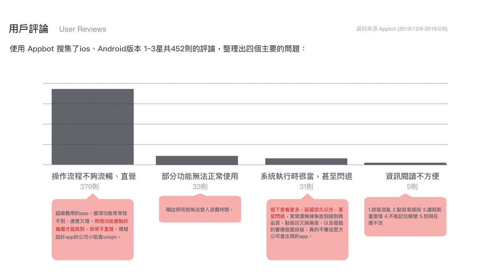
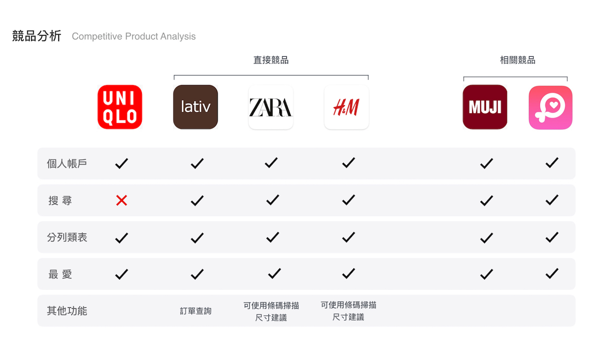
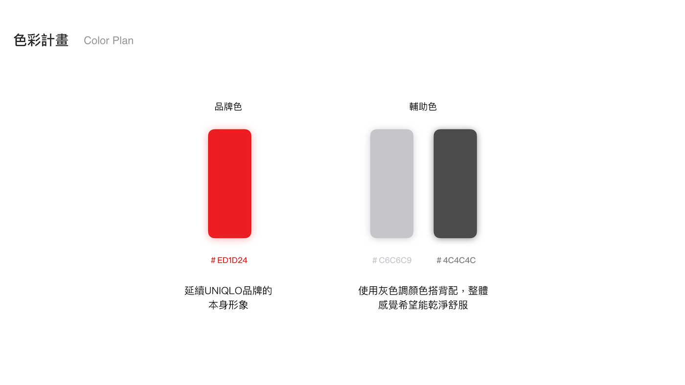
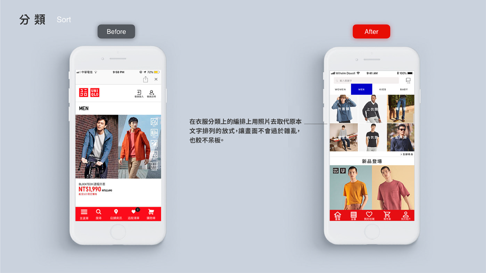
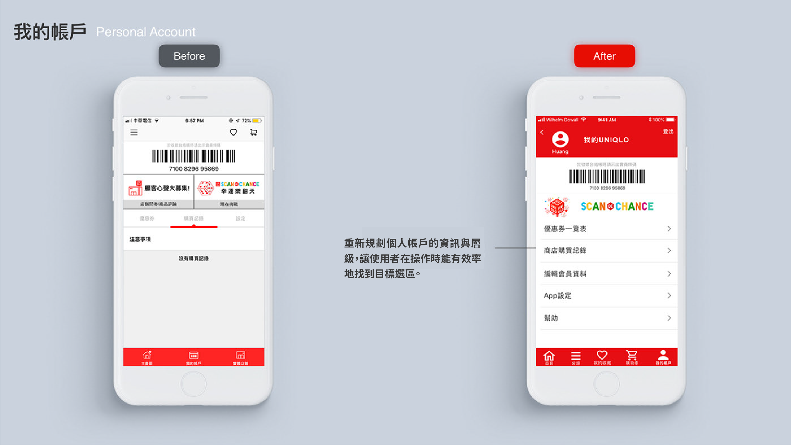

UNIQLO 是一個相當知名的且受大眾喜愛的服飾品牌，品牌形象也深植人心，也推出了台灣官方APP，讓大眾可以方便使用手機購物，然而目前的App是外接到網頁版的頁面，整體介面設計沒有做得很完善，讓使用體驗並不好、介面雜亂，資訊層級不清楚或是在購物時常常發生迷失的情況，造成挫敗感。
這一次重新設計的重點希望是可以改善使用者在購物的流程，並重新整理資訊架構，將操作流程可以更直覺，使用者一眼看出所需資訊，並除去多餘的元素，盡量保持畫面的呼吸感，提供一個友善的體驗。
在開始設計前有做了一些研究，關於用戶對於產品的評論，使用Appbot搜集了12月到2月共452則的負面用戶評論，平均只有1.3星的評價，最後歸納出四個主要的問題，同時從產品的需求做了競品分析，再去規劃一個適合的設計原則。
 雖然UNIQLO基本功能都有，但許多不直覺操作，要多次操作才能達到目的，讓使用者厭煩。
重新調整首頁資訊層級，原本的介面資訊過於雜亂，主要的搜尋功能被擺在使用者不容易找的頁面，也調整Tab bar，讓使用者能更快速找到需要功能。
原本的分類是用文字去排列，視覺上相較疲累，改用商品照呈現讓畫面能使用者能較清楚，同時讓商品的分類統一放在上方，讓使用者可以簡單操作。
把個人帳戶的資訊重新調整，讓層級更明顯，也同時也保留原本條碼的部分，讓使用者能使用。
Next: MovieGoer